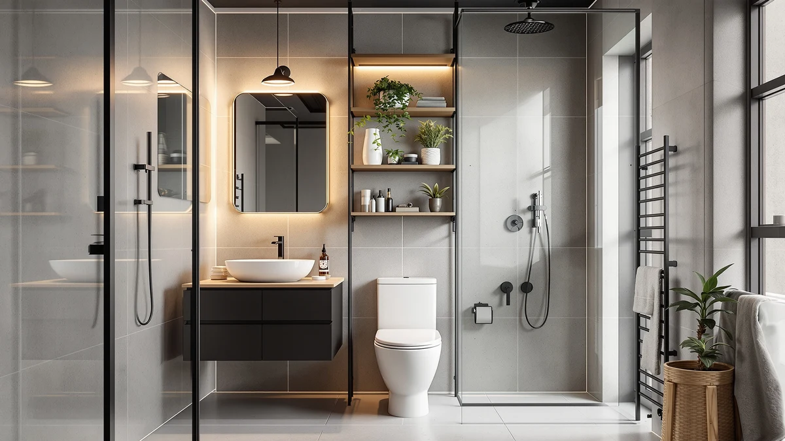

Quick Answer
The Yaheetech Over The Toilet Cabinet is a metal-and-wood storage unit priced at $82.99, sized at 9 inches deep, 25 inches wide and 66 inches tall. It sits at the shorter end of this comparison, trading some vertical shelf space for a frame reviewers describe as stable once assembled over the tank.
Our pick: Yaheetech Over The Toilet Cabinet, $82.99 Check Price on Amazon
Bottom line: our top pick is the Yaheetech Over The Toilet Cabinet at $82.99.
Things to Know Before You Buy
- The Yaheetech Over The Toilet Cabinet uses a metal frame with wood shelving, a common combination for budget-to-midrange over-the-toilet storage.
- At 9 inches deep, 25 inches wide and 66 inches tall, it clears a standard toilet tank without crowding the flush handle or the wall behind it.
- Owners report assembly takes about 45 minutes to an hour with basic tools, longer than a flat shelf because the frame straddles the tank.
- The Gizoon, TEENFON and Walsunny alternatives covered below all stand roughly a foot taller, adding shelf space for a near-identical price.
- Pricing across this comparison runs from $82.98 to $84.90, a gap of under $2 between the cheapest and most expensive option.
This yaheetech over the toilet review looks at whether a budget-friendly storage cabinet can handle the small gap above a toilet tank without crowding the room or falling apart under daily use. Over-the-toilet cabinets are popular in small bathrooms because they add shelving without taking up floor space, but that only matters if the frame holds up once it's loaded with towels, toiletries and cleaning supplies. At $82.99 and sized 9 inches deep, 25 inches wide and 66 inches tall, the Yaheetech sits at the shorter and more compact end of this comparison. We researched its build, compared its dimensions and pricing against the Gizoon, TEENFON and Walsunny alternatives below, and read through verified owner feedback to see where it holds up and where it doesn't.
Cabinets built for the space above a toilet tank compete on a narrow set of factors: footprint, height and whether the frame stays steady once assembled. The Yaheetech Over The Toilet Cabinet goes up against the Gizoon 67 inch, TEENFON 67 inch and Walsunny towers covered later as alternatives, all of which stand roughly a foot taller for a similar price. Below, we break down what owners report about the Yaheetech's construction, where it falls short, and who should look at a taller option instead.
Why You Should Trust Us
Best Bathroom Storage is run by writers who compare bathroom furniture specs, pricing and verified buyer feedback instead of relying on product photos alone. Ilane Tall, our home and bath expert, has covered dozens of storage cabinets and over-the-toilet towers for this site, tracking how listed dimensions and materials hold up against what owners report after months of use. For this yaheetech over the toilet review, we cross-checked the manufacturer's listed measurements against the Gizoon, TEENFON and Walsunny alternatives, and we did not take the marketing copy at face value. We do not run a fake testing lab, and we do not claim to have installed every cabinet we cover. Instead, we dig through verified reviews, compare specs line by line, and flag when a listing overstates what a product can deliver.
Our Research Process
We did not put the Yaheetech Over The Toilet Cabinet in a physical bathroom ourselves. Instead, we compared its listed specifications, material description and price against three competing over-the-toilet towers, and we read through the buyer feedback attached to this listing and similar Yaheetech products. Reviewers consistently note that the metal frame holds its shape better than the lower cabinet doors, a pattern that shows up across budget-to-midrange bathroom towers in this price bracket. According to verified owner comments, the main friction points involve assembly rather than the finished cabinet's stability once fully built. We weighed that feedback alongside the raw dimensions and price against the Gizoon, TEENFON and Walsunny alternatives to see where the Yaheetech earns its spot in a yaheetech over the toilet review and where it falls behind.
Overview & Specs

Yaheetech Over The Toilet Cabinet
What we like
- 9-inch depth keeps the cabinet close to the wall, so it doesn't crowd the room the way a deeper tower would
- Metal frame construction reported as stable by verified owners once bolted together
- Priced below the Gizoon, TEENFON and Walsunny alternatives covered below
- 66-inch height clears a standard tank and lid without blocking the flush handle
Flaws but not dealbreakers
- Shorter than the Gizoon, TEENFON and Walsunny alternatives if you want maximum shelf space
- Lower cabinet doors feel less rigid than the metal frame, according to several reviewers
- Assembly takes closer to an hour since the frame has to straddle the tank
| Material | Metal / wood |
| Size | 9″D × 25″W × 66″H |
The Yaheetech Over The Toilet Cabinet is built around a metal frame with wood-panel doors and shelving, a construction style common among over-the-toilet towers priced under $100. At 9 inches deep and 25 inches wide, it sits close enough to the wall to avoid eating into a small bathroom's walking space, while its 66-inch height clears a standard tank without touching the flush handle or crowding a towel bar mounted above it. That combination of a shallow footprint and a mid-range height is the main reason this cabinet keeps showing up in searches for a yaheetech over the toilet review rather than one of the taller, bulkier alternatives.
Verified buyers describe the metal frame as the most dependable part of the build, holding its shape even when the lower cabinet and open shelf carry towels, toiletries or baskets. The most common complaint centers on assembly, where reviewers mention that fitting the frame around the tank takes longer than a simple shelf and benefits from a second pair of hands. Once assembled, owners report the cabinet stays steady against the wall during normal use. At $82.99, it costs less than the Gizoon, TEENFON and Walsunny towers below despite standing roughly a foot shorter, a trade-off worth weighing if maximum shelf count matters more to you than a compact footprint.
What We Liked
Owner feedback on this yaheetech over the toilet review keeps returning to the frame's stability. Buyers describe the metal structure as resistant to wobbling even after months of regular use, which matters more than raw shelf count once you start loading extra towels or cleaning supplies onto the shelves. The 9-by-25-inch footprint is the other clear strength, since it fits a standard toilet tank without pushing out into the room, and several owners mention buying it specifically because a wider or deeper cabinet wouldn't clear their door swing.
Owners also point to the mix of enclosed cabinet space and an open shelf as more practical day to day than an all-open design, since you can tuck away cleaning supplies behind a door while keeping towels within easy reach on top. A few reviewers mention adding small bins to the open shelf to keep loose items organized, a simple workaround that keeps the layout tidy once the cabinet is in regular use.
What Could Be Better
Assembly is the recurring frustration in owner feedback for the Yaheetech. Buyers report that fitting the frame around an existing tank takes longer than a simple shelf install and that having a second person hold pieces in place makes the process go faster. The lower cabinet doors are the other weak point. Reviewers describe them as noticeably less rigid than the metal frame, with a few noting the hinges feel loose after repeated opening and closing. At $82.99, the Yaheetech also stands close to a foot shorter than the Gizoon, TEENFON and Walsunny alternatives covered below, so anyone chasing maximum shelf space per dollar should look at those first.
A handful of reviewers also mention that the wood-panel finish scuffs more easily than they expected, particularly around the door edges where hands brush against it daily. None of this changes the frame's overall stability, but it's worth knowing before you buy if you want the cabinet to still look new after a year of regular use.
Who Is It For?
The Yaheetech Over The Toilet Cabinet fits a household with a small-to-midsize bathroom that needs a compact storage fix rather than a full wall of shelving. Its shallow 9-inch depth and 66-inch height make it a solid pick for bathrooms where floor space is tight and a bulkier tower would feel out of place. It is not the right choice if you need the maximum shelf height a bathroom wall can offer. In that case, the taller Gizoon, TEENFON or Walsunny alternatives covered below make better use of the vertical space for a similar price.
Renters and apartment dwellers come up often in this kind of feedback, since the cabinet stands freestanding over the tank and doesn't require drilling into a wall. Anyone who has struggled to fit a deeper cabinet into a cramped bathroom will notice the difference the Yaheetech's shallow base makes. On the other hand, a household storing linens and supplies for several people will likely run out of shelf space sooner on this model than on the taller alternatives below.
Alternatives to Consider
If the Yaheetech's 66-inch height or shallow 9-inch depth doesn't match what your bathroom needs, these three alternatives cover the most common trade-offs: two towers that reach a full 67 inches, and a third that adds a slightly larger footprint for a higher price. Each one swaps compactness for extra shelf space in a different way, so measure your own space before choosing between them.

Editor’s Pick
Gizoon 67” H Tall Bathroom
Stands a full 67 inches tall at the same $82.99 price as the Yaheetech, a better fit if you want more shelf space without paying more for it.
$82.99
Check Price on Amazon
Best Value
TEENFON 67" Tall Bathroom Cabinet
A cent cheaper than the Yaheetech while standing about a foot taller, the strongest option if maximizing shelf space per dollar is your priority.
$82.98
Check Price on Amazon
Premium Choice
Walsunny Tall Bathroom Storage Cabinet
The priciest option in this comparison at $84.90, worth considering if its finish and shelf layout better match your bathroom's style than the Yaheetech's.
$84.90
Check Price on AmazonFrequently Asked Questions
Is the Yaheetech Over The Toilet Cabinet sturdy enough for daily use?
Owners report the metal frame holds its shape once bolted together, even with shelves loaded with towels and toiletries. The lower cabinet panels take weight more reliably than the open upper shelf, so heavier bottles are better stored there.
How does the Yaheetech Over The Toilet Cabinet compare to the Gizoon and TEENFON alternatives?
The Gizoon and Yaheetech both land at $82.99, while the TEENFON is a cent cheaper at $82.98, so price alone won't settle the decision. Reviewers point to small differences in shelf configuration and finish between the three, which matters more than price once you know your bathroom's exact footprint.
What comes in the box, and how long does assembly take?
Owners report the cabinet ships flat-packed with the frame, shelving and mounting hardware included. Several reviewers mention setting aside 45 minutes to an hour, since the cabinet straddles the toilet tank and benefits from a second pair of hands during assembly.
Final Verdict
This yaheetech over the toilet review comes down to a straightforward trade-off: a compact, wall-hugging footprint and a dependable metal frame against less overall height than its three rivals. For a small-to-midsize bathroom that needs extra storage without a tower that crowds the room, the Yaheetech is the practical pick. If your bathroom has the wall height to spare, the Gizoon, TEENFON or Walsunny alternatives above make better use of it for a similar price. Either way, start with whichever trade-off matters more in your bathroom: a shallow footprint and a stable frame, or every extra inch of shelving you can get.